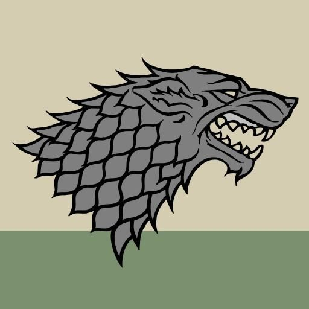
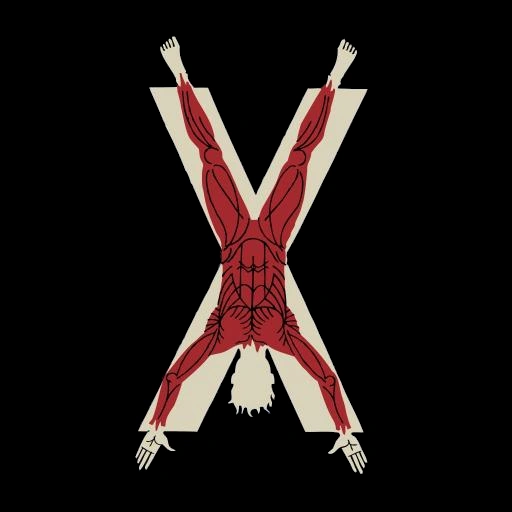

Casas
Game of Thrones
- 
-

-

-

-

- 
Stark
Uma das sete grandes Casas de Westeros, responsável por manter a ordem no Norte. Sua linhagem remonta aos Primeiros Homens e, nos tempos antigos, os Starks eram independentes e comandavam o norte com seus Reis do Inverno. Isso mudou com a conquista de Aegon Targaryen, e os Starks juraram lealdade ao recém-unificado Sete Reinos e foram nomeados Lordes de Winterfell e Guardiões do Norte.
São uma das poucas Casas cujo dizer oficial é uma advertência e não uma vanglória. Também eram uma das casas a possuir uma lâmina ancestral de aço valiriano. No caso, era uma espada enorme e pesada chamada Gelo. Essa espada foi tomada de Eddard Stark pelos Lannisters, que a destruíram para fabricar outras duas espadas valirianas.
Targaryen
Os Targaryens são uma família descendente de Valíria, tendo partido dessa lendária cidade doze anos antes do misterioso cataclismo que a destruiu completamente. Por causa disso, se tornaram os últimos senhores de dragão a existir no mundo. Fizeram sua casa na ilha Pedra do Dragão, em Westeros, onde permaneceram por mais de um século, até que decidissem conquistar Westeros.
A Casa Targaryen reinou Westeros por 276 anos, período pelo qual enfrentou vários problemas, como a morte de seus dragões, rebeliões, epidemias, e mais guerras. Por fim, durante o reinado de Aerys II, conhecido como Rei Louco, Robert Baratheon liderou a revolta contra os Targaryen e assumiu o trono após destituí-los.
Baratheon
Uma das sete nobres Casas de Westeros a receberem o dever de guardar um dos Sete Reinos após a conquista dos Targaryen. A eles foi dado a proteção das Terras da Tempestade, e seu trono fica em Ponta Tempestade. O local é um antigo castelo construído pelos Reis da Tempestade de outrora e antiga moradia da extinta Casa Durrandon.
A linhagem dos Baratheons começou com Orys Baratheon. Um dos generais de Aegon Targaryen, ele conquistou o castelo de Ponta Tempestade durante as Guerras de Conquista e se casou com a princesa Argella Durrandon, única descendente do último Rei da Tempestade. A partir daí, Orys tomou para si não apenas o castelo e as terras, mas também o brasão e o lema dos Durrandons. Desde então, a Casa Baratheon mostrou ser uma das famílias mais leais ao reinado Targaryen.
Lannister
Considerada a Casa mais rica de Westeros, os Lannisters são uma das famílias a proteger uma das regiões dos Sete Reinos, sendo os Senhores das Terras Ocidentais, Guardiões do Oeste. Sua morada é Rochedo Casterly, um palácio construído sobre um enorme rochedo à beira mar. Tal rochedo é abundante em depósitos de ouro, fonte de toda a riqueza da família.
Os Lannisters possuem um lema não oficial, além do "Ouça-me Rugir". Esse segundo lema é "Um Lannister sempre paga suas dívidas", e evidencia o lado vingativo e premeditado comum aos membros da casa. Além de serem reconhecidos por sua inteligência, sua aparência de cabelos dourados e olhos verde-esmeraldo também é um destaque.
Greyjoy
Outra das grandes Casas de Westeros. Os Greyjoys são orgulhosos e habilidosos guerreiros do mar. Seu trono fica no castelo de Pyke, de onde governam as Ilhas de Ferro, um arquipélago de clima chuvoso e severo, de terreno rochoso que não possibilita o cultivo de muita coisa, e cercado por mares tempestuosos.
As ilhas de Ferro também são conhecidas como a Terra dos Mil Reis, pois é dito que, em seu navio, todo capitão é um rei. Isso também possui um paralelo em seu sistema de governo. Apesar de os Greyjoy estarem no comando da região, isso não é garantia de que o poder será passado para seus descendentes. Todas as famílias que se acharem no direito de tomar o título Senhor das Ilhas de Ferro podem se candidatar após a morte do último comandante. O mesmo deve ser feito pelo herdeiro Greyjoy. Ao longo dos anos, nenhuma outra Casa produziu tantos Senhores quanto a Greyjoy.
Bolton
Uma casa que possui uma reputação sinistra entre os Sete Reinos. Os Boltons são uma família nortista impiedosa e vingativa que possuem o costume de esfolar seus inimigos. Não perdem uma oportunidade de perpetuar essa fama, estampando um homem sem pele em seu brasão e batizando sua fortaleza de Forte do Pavor, localizada às margens do Rio das Lágrimas, na região leste do Norte.
Descendente dos Primeiros Homens e atual governante do Norte, são grandes inimigos ferrenha dos Stark. Eles até esfolaram alguns de seus membros, pendurando seus corpos nas paredes de sua fortaleza. Há rumores de que eles até usavam as peles de seus inimigos como capas. Os Boltons chegaram a ser uma das várias famílias nortistas que juraram fidelidade aos senhores de Winterfell em determinado período. Contudo, sua real aliança foi com os Lannisters, para trair Robb Stark em sua campanha para se tornar o Rei do Norte, tomando o título de Guardião do Norte para si.
Martell
A última das sete grandes e nobres Casas de Westeros. Os Martells são os senhores de Dorne, a árida região ao extremo sul dos Sete Reinos. Vivem no Palácio Antigo, na cidade de Lança Solar. No princípio, a Casa Martell era apenas uma pequena família de Dorne que disputava o poder da região com outras Casas, como os Yronwoods e os Allyrions. Nessa época, o brasão dos Martell exibia apenas a figura de uma lança. Tanto o brasão quanto a situação da família mudaria com a chegada de Nymeria.
Os Martell resistiram a todas as investidas militares dos Targaryen durante e depois das Guerras de Conquista. Dorne foi o único reino que não se ajoelhou e não cedeu suas espadas para forjar o Trono de Ferro. A região só foi unificada ao reino do Trono de Ferro 160 anos depois, quando o príncipe Daeron Targaryen se casou com Mariah Martell.